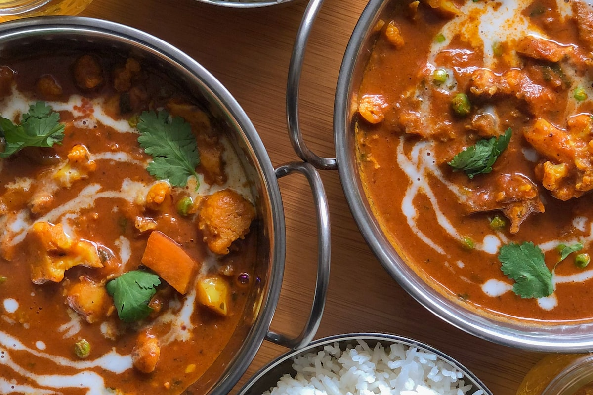
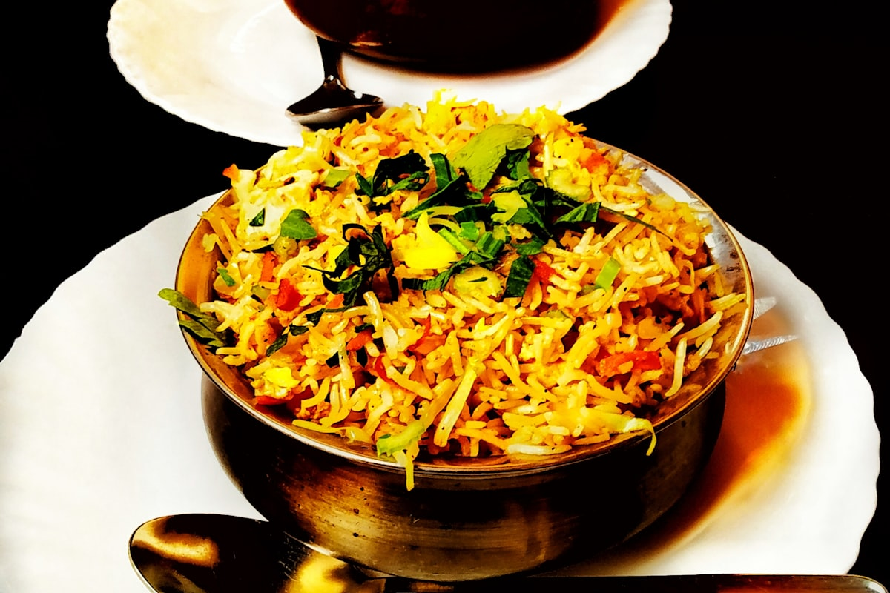

The Staple Divide: Wheat in the North, Rice Everywhere
In Taiwan, rice is the undisputed staple. Every meal revolves around a bowl of white rice with side dishes (pei cai) arranged around it. In India, the picture is more complex. North Indian families eat wheat-based breads daily — freshly made roti (unleavened flatbread) rolled and cooked on a tawa (flat griddle) by hand, often by the mother or grandmother while the rest of the family eats. Making roti is a skill passed down through generations, and no two households make it exactly the same way.
South India, like Taiwan, is rice-centered. But even the rice is different — Indians typically use long-grain basmati or sona masoori rice, which cooks into separate, fluffy grains rather than the sticky, short-grain rice preferred in Taiwan. The texture and eating experience are completely different.

Flavor Architecture: Spice Blends vs. Soy-Based Seasonings
The most striking difference between Indian and Taiwanese home cooking is the flavor base. Taiwanese cooking builds flavor through soy sauce, rice wine, sesame oil, garlic, ginger, and white pepper. These create the umami-rich, savory-sweet profile that defines Taiwanese comfort food.
Indian cooking builds flavor through dry spice blends. A typical Indian household uses 15 to 25 different spices regularly: cumin, coriander, turmeric, chili powder, garam masala, mustard seeds, fenugreek, asafoetida, and many more. Each dish uses a different combination, and the order in which spices are added to hot oil determines the final flavor. This is why two seemingly similar curries can taste completely different.
Meal Structure: Thali vs. Bian Dang
A traditional Indian home meal is served as a thali — a large plate with small portions of multiple dishes: rice or roti, one or two curries (one dry, one with gravy), dal (lentils), a vegetable side, yogurt or raita, pickle (achar), and sometimes a sweet. Everything is eaten together, and diners mix and match flavors with each bite.
This is remarkably similar to the Taiwanese bian dang (lunchbox) concept: rice with multiple small sides. Both cultures understand that variety in a single meal creates a more satisfying experience. The difference is in the flavors and techniques, not the philosophy.
Cooking Methods: Tandoor vs. Wok
Taiwanese home cooking relies heavily on the wok for stir-frying, deep-frying, and braising. Indian home cooking centers on the kadhai (similar to a wok but deeper) for curries, the tawa for flatbreads, and pressure cookers for lentils and beans. The tandoor (clay oven) is mainly used in restaurants and special occasions, producing the smoky naan and kebabs that most people associate with Indian food.
Both cuisines also share a love for soup-like preparations: Taiwanese families enjoy soups with every meal, while Indian families have dal (lentil soup) and rasam (spiced broth) as daily staples. The warming, comforting quality is universal.

Experience Indian Home Cooking in Taichung
At Baba Indian Restaurant, we bring the warmth of Indian home cooking to Taichung. Our dal, roti, and vegetable dishes are prepared using traditional family recipes and techniques. Whether you are Taiwanese or from anywhere in the world, we invite you to experience how Indian families eat — with generous portions, bold spices, and the belief that every meal should be shared with care.